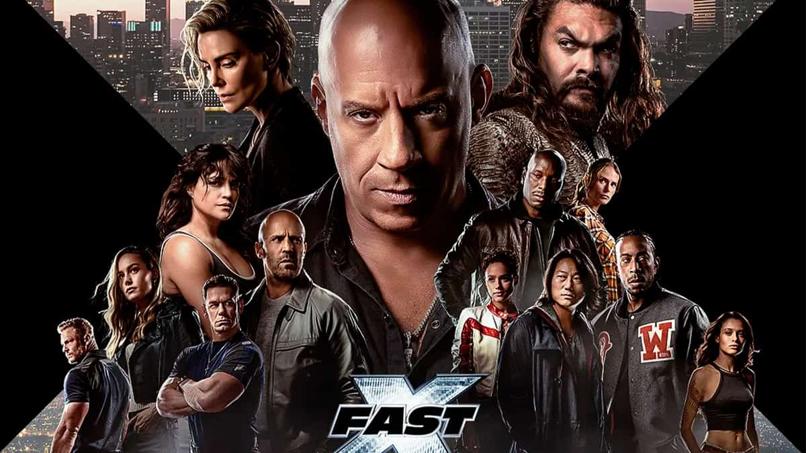
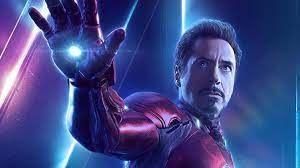

Peter Parker (Tobey Maguire) é um jovem estudioso que vive com seus tios, Ben (Cliff Robertson) e May (Rosemary Harris), desde que seus pais faleceram. Inteligente e com um grande interesse pela ciência, Peter tem dificuldade em se relacionar com seus colegas, por ser tímido e por eles o considerarem um nerd. Até que, em uma demonstração científica, um acidente inesperado faz com que aranha modificada geneticamente pique Peter. A partir de então seu corpo é quimicamente alterado pela picada da aranha, fazendo com que Peter possa escalar paredes e tetos, emitir pelos punhos um fluido ultra-resistente semelhante à uma teia de aranha e passe a ter um "sentido de aranha", que o avisa sempre que há perigo por perto, além de superforça e visão ampliada. Inicialmente Peter pensa em usar seus novos poderes para ganhar dinheiro, adotando o nome de Homem-Aranha e se apresentando em lutas de exibição. Porém, ao permitir que um ladrão fuja por não considerar sua função capturá-lo, o fugitivo acaba assassinando seu tio Ben. A partir de então, Peter decide não mais usar seus poderes para proveito próprio e sim para enfrentar o mal, tendo como seu primeiro grande desafio enfrentar o psicótico Duende Verde (Willem Dafoe), que na verdade é o empresário Norman Osborn após ter sido exposto à um gás experimental que lhe deu uma segunda personalidade e grande força física.

No décimo filme da série Velozes & Furiosos e último da nova trilogia (Velozes 8, 9 e 10), ao longo de muitas missões e contra probabilidades que pareciam impossíveis, Dom Toretto (Vin Diesel) e sua família foram mais espertos e superaram todos os inimigos em seu caminho. Agora, eles devem desafiar o adversário mais letal que já enfrentaram. Alimentada pela vingança, uma ameaça terrível emerge das sombras do passado na forma de Dante (Jason Momoa), para destruir o mundo de Toretto e destruir tudo - e todos - que ele ama. Ele então, comandando novamente a equipe de corredores mais conhecida do mundo, encara mais uma difícil missão sobre quatro rodas. O fim da estrada começa e Velozes & Furiosos 10 lança os capítulos finais de uma das franquias globais mais famosas e populares do cinema, agora em sua terceira década e ainda forte com o mesmo elenco e personagens centrais de quando começou.
Velozes e Furiosos 7 acompanha Dom (Vin Diesel), Brian (Paul Walker), Letty (Michelle Rodriguez) e o resto da equipe após os acontecimentos em Londres. Apesar de terem suas chances de voltar para os Estados Unidos e recomeçarem suas vidas, a tranquilidade do grupo é destruída quando Deckard Shaw (Jason Statham), um assassino profissional, quer vingança pela morte de seu irmão. Agora, a equipe tem que se reunir para impedir este novo vilão. Mas dessa vez, não é só sobre ser veloz. A luta é pela sobrevivência. Assista ao filme

Tony Stark (Robert Downey Jr.) é um industrial bilionário, que também é um brilhante inventor. Ao ser sequestrado ele é obrigado por terroristas a construir uma arma devastadora mas, ao invés disto, constrói uma armadura de alta tecnologia que permite que fuja de seu cativeiro. A partir de então ele passa a usá-la para combater o crime, sob o alter-ego do Homem de Ferro.
Após ganhar a Copa Pistão pela quarta vez, Relâmpago McQueen (Owen Wilson) e sua equipe retornam a Radiator Springs para descansar. Lá ele reencontra Mate (Larry the Cable Guy), seu maior amigo, que aguarda ansioso pelo retorno. Pouco após sua chegada Relâmpago toma conhecimento do Grand Prix Mundial, evento organizado pelo empresário Miles Eixodarroda (Eddie Izzard) onde todos os competidores usarão Alinol, um combustível alternativo. Após ser provocado em um programa de TV por Francesco Bernouilli (John Turturro), um adversário, Relâmpago resolve também competir. Ele decide levar Mate para acompanhá-lo nas corridas, mas logo ele é confundido com um espião americano. Desta forma Mate precisa lidar com Finn McMíssil (Michael Caine) e Holly Caixadibrita (Emily Mortimer), que tentam descobrir qual é o plano do professor Z (Thomas Kretschmann) e seu enigmático chefe para a competição.